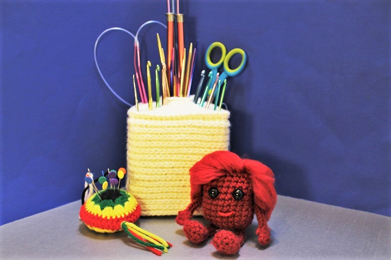

Crafty Corner
Handmade with love
Welcome
Welcome to my Crafty Corner! I organized my crafting throughout the last couple years to share on this site. Mostly I like to spend my free time handcrafting. After a busy day, it is very relaxing to knit, crochet, etc. This is not only an excellent way to relieve stress, but also you can create useful or fun things. This website is a collection of some of my works. Maybe it can inspire some of you to try to make some crafts of your own! I hope that you enjoy my site and my creations!
